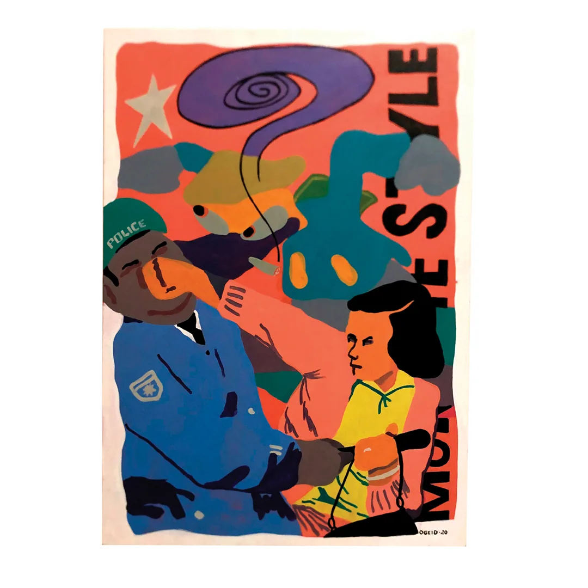
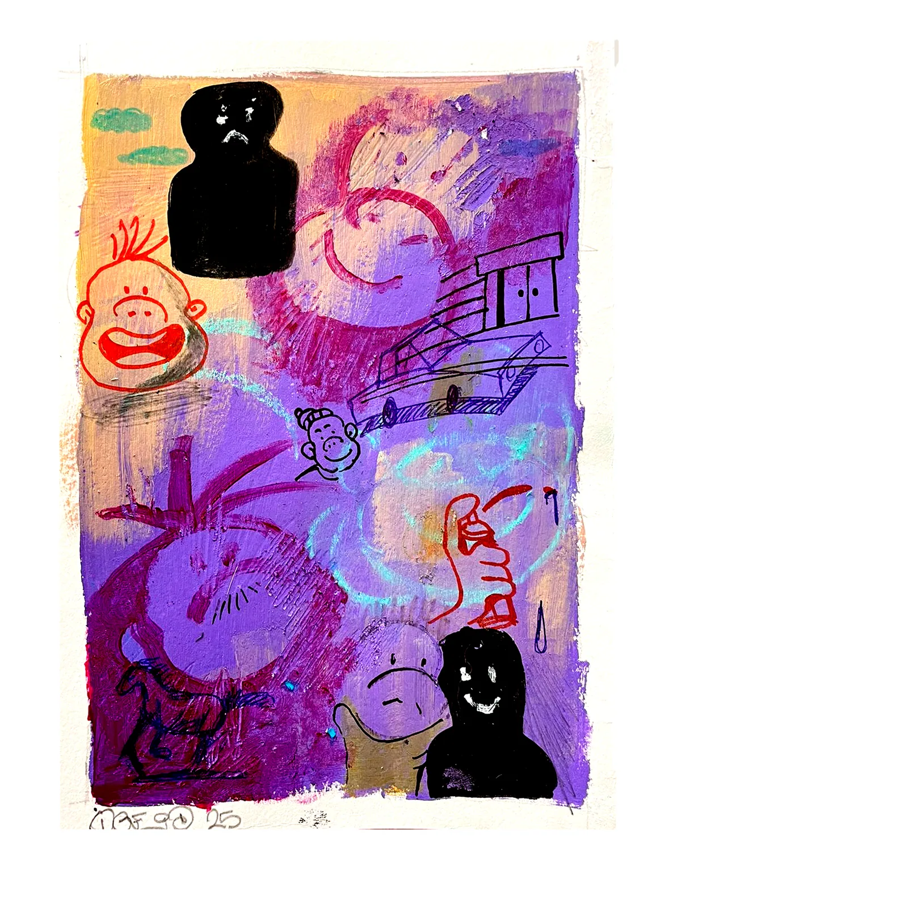
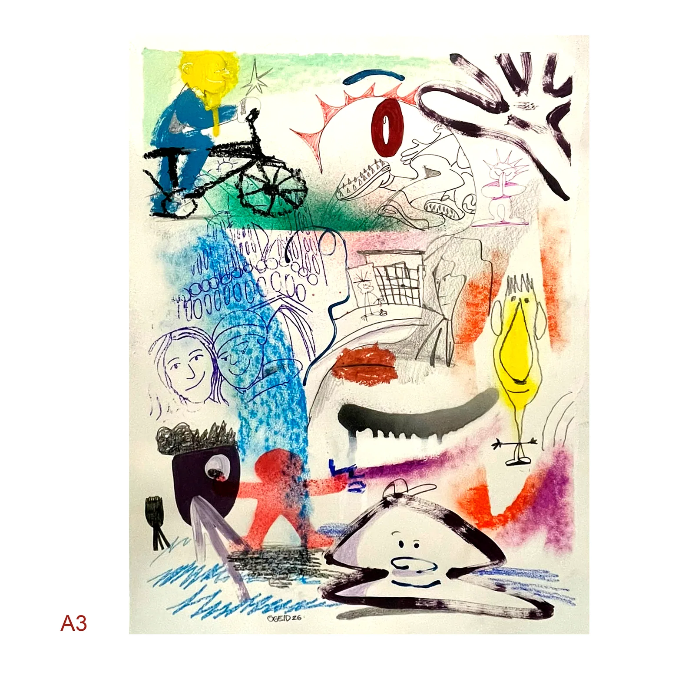

06 — Sobre
OGEID
OGEID é o nome artístico e plataforma criativa de um artista independente cuja produção transita entre artes visuais, tatuagem, desenho, pintura, escultura, animação e design.
Sua pesquisa visual é atravessada pela cultura urbana, pela experimentação gráfica e pela construção de uma linguagem autoral.
Desde 2023, desenvolve uma investigação pictórica de orientação neoexpressionista, utilizando símbolos, personagens e referências da cultura urbana para construir composições que dialogam com experiências pessoais, relações humanas, filosofia e cotidiano.
A tatuagem ocupa um lugar central em sua prática, especialmente por meio da criação contínua de flash tattoos autorais.
Paralelamente, desenvolve projetos independentes que exploram diferentes suportes, materiais e possibilidades de circulação da arte.
Sua produção busca aproximar expressão artística, identidade visual e cultura independente.


